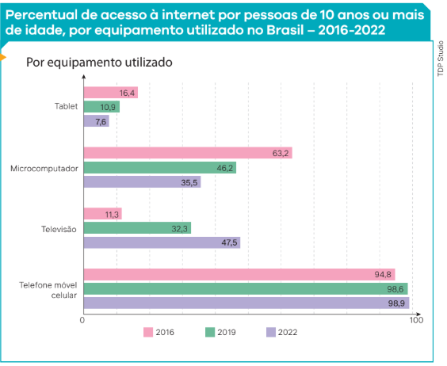
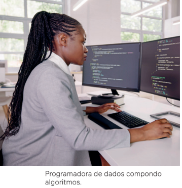

Em 1996, o sociólogo francês Pierre Bourdieu (1930-2002) fez as
seguintes afirmações em relação à televisão e aos apresentadores
dos programas assistidos pela população:
A televisão tem uma espécie de monopólio de fato sobre
a formação das cabeças de uma parcela muito importante da
população. Ora, ao insistir nas variedades, preenchendo esse
tempo raro com o vazio, com nada ou quase nada, afastam-se
as informações pertinentes que deveria possuir o cidadão [...].
[...] a televisão não é muito propícia à expressão do pensa-
mento. [...] E um dos problemas maiores levantados pela televisão é a questão das relações entre o pensamento e a velocidade.
Pode-se pensar com velocidade? Será que a televisão, ao dar a
palavra a pensadores que supostamente pensam em velocidade
acelerada, não está condenada a ter apenas fast-thinkers, pensadores que pensam mais rápido que sua sombra...?
[...]Mas, sobretudo, estando em condições de ter acesso per-
manente à visibilidade pública, à expressão em grande esca-
la, inteiramente impensável, pelo menos até o surgimento da
televisão, para um produtor cultural, mesmo muito célebre,
eles podem impor ao conjunto da sociedade seus princípios de
visão do mundo, sua problemática, seu ponto de vista.
BOURDIEU, P. Sobre a televisão. Rio de Janeiro: Jorge Zahar,
1997. p. 23, 39, 26 e 66.
A instalação The weather project (2003), do artista islandês-dinamarquês Olafur Eliasson (1967-), utiliza neblina artificial, espelhos e uma grande luz semicircular para criar uma representação artificial do Sol e do clima, questionando a percepção humana da natureza e a influência da tecnologia na experiência do mundo natural.
Para compreender melhor essas ideias, apresentaremos, neste capítulo, os meios de comunicação de massa desde meados do século XX até as mídias digitais na atual sociedade global
– também conhecidas como Tecnologias da Informação e Comunicação (TICs) –, fenômeno
proporcionado pelos rápidos avanços tecnológicos que temos presenciado nas últimas décadas, impulsionados recentemente pela chamada inteligência artificial (IA).
Nosso debate, do ponto de vista da leitura sociológica, estará centrado na forma, no poder
de influência e na mudança que todas essas mídias exercem nas relações sociais.
Uma revolução que não para...
Você deve estar acostumado a receber muitas informações todos os dias. Como o próprio
nome permite entender, os meios de comunicação de massa correspondem a todas aquelas
mídias – ou seja, aos suportes necessários à transmissão de informações – que podem atingir
a maior parte da população do planeta. Como o acesso a diversos meios tem crescido de forma
bastante acelerada em nível mundial neste século XXI, as mídias digitais se transformaram, em
poucos anos, nos principais meios de comunicação de massa.
A televisão, citada por Bourdieu, tem acompanhado os avanços das
Novas Tecnologias da Informação e Comunicação (NTICs), superando
em alcance, velocidade de dados e recursos as antigas redes de transmissão de sinais.
As redes de transmissão via internet e a cabo estabeleceram um
novo formato para o compartilhamento dos programas de diversos
tipos (noticiários, eventos esportivos, filmes, séries, desenhos, entre
outros) que hoje compõem um “cardápio” de opções oferecidas pelos
chamados serviços de streaming, por meio de aparelhos de TV cada vez
maiores e mais sofisticados, assim como pelo acesso via computadores,
tablets e celulares.
Tanto nas grandes quanto nas pequenas cidades, pessoas estão utilizando cada vez menos os correios e os telefones convencionais para se
comunicar, dando preferência aos celulares, aos e-mails, às chamadas
de vídeo, aos chats, aos aplicativos de trocas de mensagens e às redes
sociais. O fato de poder comunicar-se em tempo real com pessoas de
diferentes localidades, inclusive de outros países, torna as modernas
ferramentas de comunicação ainda mais atrativas para a sociedade, sobretudo para as pessoas mais jovens.
A rotina de estudos também foi amplamente impactada pelas TICs.
Se no passado era necessário adquirir livros, fazer cópias impressas de
materiais ou deslocar-se fisicamente até bibliotecas, atualmente é possível consultar acervos de diversas partes do mundo na internet ou fazer
uma pesquisa sobre determinado assunto por meio de um site de buscas
por imagens, vídeos e textos. Observe o gráfico a seguir, que demonstra o
crescimento exponencial da utilização das novas tecnologias da informação em detrimento das mídias convencionais do século XX.
Antes do surgimento das mídias digitais, a transmissão de dados ocorria por meio da instalação de antenas nas partes mais altas da localidade. As parabólicas são antenas que recebem sinais das redes de comunicação via satélite e foram muito utilizadas em diversas residências, sobretudo nas localizadas nas zonas rurais.

Fonte: 161,6 MILHÕES de pessoas com 10 anos ou mais de idade utilizaram a internet no país em 2022. Agência IBGE Notícias, 9 nov. 2023. Disponível em: https://agenciadenoticias.ibge.gov.br/ agencia-noticias/2012-agencia-de-noticias/ noticias/38307-161-6-milhoes-de-pessoas -com-10-anos-ou-mais-de-idade-utilizaram -a-internet-no-pais-em-2022. Acesso em: 16 set. 2024.
Com base nos dados divulgados pela Pesquisa Nacional por Amostra de Domicílios Contínua (PNAD Contínua) em 9 nov. 2023, cerca de 161 milhões de pessoas com 10 anos ou mais de idade utilizaram a internet no Brasil em 2022. O equipamento mais utilizado foi o celular, seguido pela televisão, pelo microcomputador e, por último, pelo tablet.
Internet e as novas formas de mobilização
O desenvolvimento das novas tecnologias da informação está revolucionando hábitos, costumes e modos de
pensar dos povos e indivíduos, mas, além disso, elas têm sido cada vez mais importantes como parte da organização de movimentos sociais e de mobilizações político-ideológicas da sociedade. Podemos constatar atualmente
que as redes sociais cumprem um papel importante de mobilização da juventude e da população em geral nos
diversos países do mundo, como ocorreu durante revoltas de caráter popular, como a Primavera Árabe.
As redes sociais também têm sido utilizadas para a mobilização política no Brasil, como vem acontecendo
desde as manifestações de junho e julho de 2013. Esses atos públicos, tanto no exterior como no Brasil, costumam
ser transmitidos ao vivo pelas redes sociais, disponibilizados posteriormente em publicações de fotografias e vídeos, entre outros formatos. Além disso, cada vez mais surgem novos canais e mídias digitais voltadas para essa
finalidade.
Mesmo quem não tem acesso às mídias digitais, de alguma forma tem a vida impactada por elas. Muitas decisões importantes para a sociedade, tomadas por governos, empresas e pessoas que interferem na política, na
economia, na cultura, entre outros aspectos importantes relacionados à vida em socidade, decorrem de relações
estabelecidas com base nas inovações tecnológicas.
Essa reflexão é importante porque podemos afirmar que as mídias, além de informar e nos colocar em contato
com outras pessoas, são importantes agentes de socialização, ou seja, contribuem para a disseminação de valores,
ideias, atitudes e posicionamentos sobre o que ocorre no mundo. É importante ressaltar que essas mídias podem
ser consideradas instituições sociais e podem transformar e produzir novas formas de relações sociais. Tais relações promovidas pelos meios de comunicação de massa, como as mídias digitais, são compreendidas, na Sociologia, sob a expressão da chamada Indústria Cultural, conforme já estudamos.
Mudanças de hábitos e de relações sociais
A massificação envolve a propagação de conteúdos e produtos em larga escala, acelerando o consumo sem proporcionar reflexões. Além disso, esse processo é influenciado pela expansão das NTICs, o que possibilitou o surgimento de formas de interação entre as pessoas que eram inviáveis há alguns anos. O uso dos celulares passou a ser quase uma regra e oportuniza mobilidade nas relações sociais, alterando comportamentos. Em determinados contextos, tais mudanças são positivas, como é o caso de familiares que podem se comunicar com os filhos adolescentes quando estes estão fora de casa. Entretanto, quando se trata das relações de trabalho, o uso do celular pode ser prejudicial ao ocupar todo o tempo das pessoas, inclusive os momentos de descanso.
Reality shows e redes sociais: a vida como um grande espetáculo
Algumas das programações veiculadas pelas redes sociais digitais estão também revolucionando certas ideias
sobre vigilância e controle das pessoas. Um exemplo é o Big Brother Brasil (BBB), um programa exibido por uma
grande empresa de mídia com ampla repercussão nas redes sociais e que tem obtido elevada audiência desde sua
estreia.
Em 1999, o executivo de uma TV holandesa, John de Mol (1955-), teve a ideia de criar um reality show (show da
realidade) no qual pessoas comuns seriam selecionadas para conviverem dentro de uma casa, vigiadas por diversas
câmeras, 24 horas por dia. O nome do programa – Big Brother – teve como inspiração uma antiga obra literária de
ficção científica, intitulada 1984. Big Brother é um reality show em que, durante aproximadamente três meses, um
grupo de pessoas tenta se manter o máximo de tempo possível em uma casa fechada, sem acesso a informações
do mundo externo, a qualquer rede social, sem contato com amigos e familiares e, assim, conquistar prêmios, culminando em uma grande quantia de dinheiro para o vencedor. A decisão sobre quem sai e quem continua no jogo é
tomada pela audiência que acompanha o programa e que, por algum motivo, toma partido de um ou mais membros
da casa, votando pela internet para que um participante seja eliminado ou permaneça na competição.
Diferentemente da obra de Orwell, no programa televisivo informa-se que não há intenção de governar,
vigiar e controlar as mentes, mas, sim, de mostrar “as
pessoas como elas verdadeiramente são”, com suas virtudes e, principalmente, com seus defeitos. O programa
apresenta-se como um entretenimento, uma diversão e
um passatempo marcado pelas “espiadas” no comportamento dos seus participantes. Entretanto, cabe um
questionamento: será que essa exposição no programa
não faria parte de uma teatralização, em certo sentido?
Ao contrário do romance, que passava a ideia de que
numa sociedade futura seríamos todos vigiados, controlados e manipulados, hoje os reality shows estariam
representando uma nova realidade social: nós somos vigiados, mas não no sentido de que perdemos nossa liberdade, e sim de que no mundo atual o fato de ser visto sempre passa a ser entendido como uma qualidade, já que a
visibilidade é muito valorizada. Dessa forma, quanto mais você é visto, mais você participa do mundo.
Atualmente, há uma multiplicidade de reality shows nos canais de entretenimento dos serviços de streaming de
todas as partes do mundo, com quase a totalidade deles transmitidos em tempo real.
O objetivo é estabelecer uma relação mais direta com o público, que, em geral, participa ativamente da torcida
e das interações na modalidade remota.
Esses programas estão diretamente vinculados à condição de conexão e comunicação on-line permanentes e
bastante recentes. No entanto, algumas reflexões teóricas que procuram explicar determinados aspectos dessa
realidade não são tão recentes assim.
Espetáculo e sociedade
Um exemplo nesse sentido tem como referência o filósofo francês Guy Debord (1931-1994), que publicou, em
1967, a obra A sociedade do espetáculo. Nesse trabalho, Debord escreveu 221 pequenas teses a respeito da característica da sociedade contemporânea de ser controlada pela “tirania das imagens”, voltadas fundamentalmente
para estimular o consumo e alienar o indivíduo da realidade da sua vida. Leia, a seguir, um excerto do livro.
A alienação do espectador em proveito do objeto contemplado (que é o resultado da sua própria atividade
inconsciente) exprime-se assim: quanto mais ele contempla, menos vive; quanto mais aceita reconhecer-se
nas imagens dominantes da necessidade, menos ele compreende a sua própria existência e o seu próprio desejo. A exterioridade do espetáculo em relação ao homem que age aparece nisto, os seus próprios gestos já não
são seus, mas de um outro que lhos apresenta.
Eis porque o espectador não se sente em casa em nenhum lado, porque o espetáculo está em toda a parte.
DEBORD, G. A sociedade do espetáculo. Rio de Janeiro: ContraPonto, 1997. p. 25-26.
A antropóloga e pesquisadora argentina Paula Sibilia (1967-), professora da Universidade
Federal Fluminense (UFF), analisando as mídias digitais no tempo presente, identifica certas
características comuns ao que denominou como “o show do Eu”, reforçando e atualizando a
leitura de Debord sobre o processo de “espetacularização da vida”. Por isso o uso, por Sibilia,
da palavra “show”, traduzindo determinado desempenho pessoal, uma performance que o indivíduo tem necessidade de apresentar publicamente para se sentir aceito socialmente. Trata-se, segundo a professora, de um “eu” inflacionado, inflado, que precisa ser amplamente
mostrado – principalmente por meio de selfies quase que diárias postadas nas redes sociais.
Como consequência direta dessa amostragem, há a necessidade de obter uma repercussão
positiva, uma aceitação generalizada, mensurada pelo número de “curtidas” ou “compartilhamentos” – a depender do tipo de mensagem – que a postagem irá receber do público, pelos
“amigos” que a seguem nas diversas redes sociais.
Sibilia chama a nossa atenção para o fato de que essa autoimagem compartilhada não
significa, em momento algum, que o indivíduo esteja expondo publicamente a sua vida. Afinal, o que assistimos, por mais íntimo que seja o ambiente – assim como nos reality shows –,
não representa quem aquela pessoa é, de fato, e sim a sua “curadoria”, ou seja, a imagem que
ela deseja e procura construir para obter respostas positivas do “outro”. Há um investimento
premeditado, um trabalho voltado à construção da imagem de si mesmo, agregando determinado valor. Esse valor é, inclusive, monetário e político, já que o tamanho da audiência, por
um lado, pode significar contratos de patrocínio com empresas que queiram popularizar e
vender o seu produto e, por outro, pode significar a aquisição de poder político por esse indivíduo, alçado à fama de “influencer digital”, capaz de mobilizar milhares de pessoas em prol
de alguma causa ou de alguma ideia, assim como da eleição de um político ou dos projetos
de um determinado grupo.
A publicização
de imagens e
opiniões nas redes
sociais estão
relacionadas com
um processo
que alguns
pesquisadores
identificam como
"espetacularização
da vida".
Da sociedade em rede ao colonialismo de dados: reflexões sobre o século XXI
Um dos primeiros sociólogos a abordar e analisar com profundidade a dimensão das
mudanças provocadas pelas novas tecnologias dos meios de comunicação digital foi o espanhol
Manuel Castells (1942-), que escreveu, na década de 1990, a trilogia A era da informação:
economia, sociedade e cultura. No primeiro volume, Castells apresentou o conceito de
sociedade em rede para identificar a dimensão das transformações em curso. Leia um trecho
do segundo volume a seguir.
A revolução da tecnologia da informação e a reestruturação do capitalismo introduziram
uma nova forma de sociedade, a sociedade em rede. Essa sociedade é caracterizada pela
globalização das atividades econômicas decisivas do ponto de vista estratégico; por sua forma
de organização em redes; pela flexibilidade e instabilidade do emprego e a individualização
da mão-de-obra. Por uma cultura de virtualidade real construída a partir de um sistema de
mídia onipresente, interligado e altamente diversificado. E pela transformação das bases
materiais de vida – o tempo e o espaço – mediante a criação de um espaço de fluxos e de um
tempo intemporal como expressões das atividades e elites dominantes.
CASTELLS, M. O poder da identidade. 6. ed. São Paulo: Paz e Terra, 2008. p. 17.
(A era da informação, v. 2).
A análise de Castells trata de como as mudanças tecnológicas provocaram uma nova forma
de organização da sociedade capitalista, adaptada a estes novos tempos. Em sua obra, o sociólogo define esse processo de reestruturação como revolucionário, acompanhando os autores que utilizam a expressão Terceira Revolução Industrial para se referir a esse momento da
história iniciado no final do século passado.
Castells detalha as etapas que levaram à constituição das empresas de tecnologia que se
instalaram naquele que ficou conhecido como o Vale do Silício, ao sul de São Franscisco, na
Califórnia, Estados Unidos, listando o processo de inovação que teve diversas origens e motivações, reunindo o papel desempenhado pelo desenvolvimento da tecnologia militar estadunidense na década de 1960. Esse aprimoramento tecnológico culminou no programa Guerra
nas estrelas, em 1983; nos experimentos dos laboratórios tecnológicos da Universidade de
Berkeley; no encontro de “jovens visionários”, como Steve Jobs (1955-2011) e Steve Wozniak
(1950-), que fundaram a Apple e criaram o PC (personal computer – computador pessoal, na
sigla em inglês), o primeiro microcomputador com viabilidade comercial; no desenvolvimento
de softwares de sistemas operacionais e na criação da Microsoft, por Bill Gates (1955-) e Paul
Allen (1953-2018); no avanço da tecnologia de transmissão por cabos de fibra ótica, que servem de base para a internet nos dias atuais; entre outras tantas transformações que utilizamos
no nosso cotidiano.
O sociólogo brasileiro Bernardo Sorj (1948-), diferentemente de Castells, considera que
sociedade da informação é a denominação mais usual para o processo de mudanças relatado
pelo sociólogo espanhol. Esse reconhecimento não significa, para Sorj, concordância com a
expressão, já que pondera que “informação” é um termo relativamente vago, e que todas as
sociedades, historicamente, se inserem em algum tipo de produção de conhecimento.
A definição sociologicamente mais adequada, segundo Sorj, seria “sociedades capitalistas
de consumo de bens tecnológicos”. Dessa forma, entende-se que a tecnologia, com seus produtos e serviços que incorporam o conhecimento científico, exerce um papel inovador na mediação
das relações sociais e econômicas, incluindo a comunicação e a qualidade de vida. Nesse último
item, inclusive, também de forma diversa ao otimismo de Castells em relação aos benefícios futuros da sociedade em rede, Sorj se preocupa com a desigualdade social presente nesses processos
de avanço tecnológico – a exclusão digital –, tanto na comparação entre países quanto no interior
de cada um deles, como o Brasil, que é objeto de mais de um dos seus trabalhos de pesquisa.
Na leitura de Bernardo Sorj, por mais que as transformações proporcionadas pela telemática (termo que representa a interseção tecnológica entre os avanços das telecomunicações e
da informática) sejam bastante significativas e impactantes, elas não interferem ou modificam
radicalmente as relações sociais e não alteram a estrutura da sociedade, sua estratificação e
os valores que são compartilhados.
Conhecimento, cultura e transformações tecnológicas
Outra questão relevante apontada por diversos cientistas sociais que se dedicam ao tema
está relacionada com o papel da informação, do conhecimento e da cultura nesse processo
de transformações tecnológicas.
Numa avaliação otimista, na esteira aberta por Castells, o sociólogo tunisiano Pierre Lévy
(1956-) aponta as oportunidades “libertadoras” que o desenvolvimento e a expansão das
novas redes de comunicação ao redor do planeta podem proporcionar. Lévy intitula essas
redes como “ciberespaço”, e as transformações radicais daí decorrentes como cibercultura.
Haveria um novo padrão cultural no dia a dia dos indivíduos em todas as sociedades, determinado pelas mudanças comportamentais derivadas do desenvolvimento tecnológico crescente. Pierre Lévy faz uma leitura de caráter humanista desse processo, entendendo que o
futuro se encontra em aberto e o acesso às novas tecnologias pode resultar em diminuição
das desigualdades e redução gradual das exclusões sociais que ainda persistem.
Seguindo uma linha apontada por Sorj, mas numa visão mais radicalizada, a psicóloga
social e professora estadunidense Shoshana Zuboff (1951-), da Escola de Administração de
Harvard, se notabilizou por ter cunhado o conceito de capitalismo de vigilância para se referir a esta nova era. Sua visão é pessimista, distópica, e muitos consideram que é inspirada
no romance 1984, de George Orwell (1903-1950). Segundo Zuboff, vivemos um momento de
mutação da sociedade capitalista, caracterizado pela transformação dos dados pessoais que
circulam amplamente nas redes sociais em mercadoria, farta matéria-prima gratuita utilizada
pelas empresas de tecnologia para fins extremamente lucrativos.
Assim, Zuboff identifica hábitos on-line, como assistir a filmes ou vídeos em plataformas
de streaming, fazer uma pesquisa sobre algum tipo de roupa, comprar comida, planejar uma
viagem, trocar de carro, aprender a tocar guitarra e gerar expectativas de visualizações e
curtidas em publicações em redes sociais. Ela identifica até hábitos off-line, como andar de
bicicleta, cuja prática pode ter algum tipo de interseção em algum momento com as redes
sociais, como a associação do indivíduo a algum grupo de ciclistas.
Todas as empresas de tecnologia desenvolvem um sistema sofiscado de previsão de
comportamento do indivíduo a ponto de antecipar os próximos passos do usuário nas redes
sociais. Assim, podem vender produtos utilizando as informações fornecidas ao navegar na
rede, e até mesmo sem o consentimento dos usuários, captadas pelos vídeos e microfones instalados em nossos computadores e celulares. Ainda assim, as empresas negam tais
práticas.
Zuboff complementa a sua tese afirmando que, além da obtenção de altos lucros com a
venda de dados pessoais, essas empresas, diante do processamento de tantas informações
sobre os hábitos, gostos e renda da população de milhões de usuários, passam a adquirir,
inclusive, o poder de influenciar o comportamento humano. Isso pode significar a conformação
de uma sociedade caminhando de forma acelerada para a a uma realidade de distopia.
Tecnologia e distopia
Distopia é um tipo de representação da sociedade, geralmente associada a um futuro imaginário, que é o oposto da ideia de utopia. Esta palavra – utopia – é de origem grega (“ou+-topos” significa “lugar que não existe”) e representa um país imaginário descrito na literatura
inglesa, inventado pelo escritor Thomas Morus (1480-1535), no qual um governo bem organizado proporcionava excelentes condições de vida à população.
O romance de ficção científica 1984, escrito por George Orwell, como vimos, apresenta uma crítica a
regimes totalitários e consiste em um exemplo de distopia, por ser ambientado em uma sociedade futura
cujos cidadãos seriam totalmente controlados por um poder central, que manipula a verdade e utiliza alguma forma de vigilância eletrônica, correspondendo, de certa forma, ao modelo de capitalismo informacional
citado por Zuboff. Podemos exemplificar também outras distopias famosas na literatura de ficção científica,
tais como Admirável mundo novo, de Aldous Huxley (1894-1963), publicado em 1932, e Fahrenheit 451, de Ray
Bradbury (1920-2012), de 1953. O que há de comum nessas obras, apesar das diferenças nas suas narrativas,
é exatamente a descrição de sociedades distópicas e autoritárias, onde há supressão das liberdades individuais e utilização da tecnologia para manipulação de informações, controle total e repressão política.
Um subgênero dessa literatura de ficção científica remete à cibercultura: o cyberpunk. Nas narrativas
desse tipo, o futuro distópico é focado nos excluídos pelo sistema, naqueles que vivem às margens e na periferia das cidades futurísticas, em condições muitas vezes sub-humanas. Embora o filme Blade runner, dirigido
por Ridley Scott (1937-), lançado em 1982, tenha se tornado um clássico, o romance considerado precursor
desse subgênero é a obra Neuromancer, de William Gibson (1948-), publicada em 1984.
Nele, um caubói do ciberespaço e hacker tem o seu sistema nervoso contaminado por uma toxina, impedindo-o de acessar o mundo virtual. Tem uma relação bem próxima com a história narrada no cinema pela
trilogia Matrix, iniciada em 1999 e dirigida pelas irmãs Wachowski, sendo uma de suas inspirações, ao lado da
obra Simulacros e simulação, escrita pelo sociólogo francês Jean Baudrillard (1929-2007) em 1981.
Todas as obras de ficção científica citadas nesse universo distópico têm como componentes centrais a
referência à realidade virtual, o uso de tecnologias de informação e comunicação avançadas para controle
social e o desenvolvimento da inteligência artificial.
Dados e algoritmos: uma nova forma de colonialismo?
Em linhas gerais, algoritmos são uma sequência numérica utilizada na Matemática e em aplicações da Ciência da Computação, que tem como objetivo, na programação de dados, a execução de uma ação para resolver um problema. Pode-se entender o algoritmo como um programa,
que informa à máquina (o computador) os passos e a ordem de execução de uma ação.
Essa definição ajuda a entender o que apresentamos anteriormente,
com o conceito de capitalismo de vigilância, formulado por Zuboff. Quando
navegamos na internet em algum aplicativo (um jogo, por exemplo), curtindo
uma postagem qualquer ou buscando uma informação específica (se a
pizzaria está aberta para o serviço de delivery, por exemplo), nós acionamos
um “comando”, o qual corresponde a determinado código que é “lido” e
“respondido” imediatamente (em milionésimos de segundos) pela máquina.
Ela, então, nos apresenta os resultados para o que estamos buscando ou
começa a repetir postagens parecidas com aquelas que acabamos de curtir
ou cujo tema acabamos de pesquisar. É assim que funciona o algoritmo.

Todas as grandes corporações de tecnologia, bem como empresas
capitalistas em geral, de quaisquer setores da economia, petrolíferas,
redes de supermercados, empresas alimentícias ou companhias aéreas,
utilizam plataformas ou aplicativos que rodam algoritmos com o objetivo
de “otimizar” a experiência do consumidor. Isso permite uma leitura de
seus desejos e suas preferências, facilitando a navegação do usuário no
menor período de tempo possível, garantindo sua satisfação e, ao mesmo
tempo, vendendo seus produtos. Quando nos referimos ao capitalismo
de vigilância, portanto, estamos falando dos dados manipulados pela
programação por meio de algoritmos.
Racismo algorítmico
Leia a seguir trechos da entrevista que o pesquisador Tarcízio Silva concedeu ao blog do Centro de Estudos
Estratégicos da Fundação Oswaldo Cruz (CEE-Fiocruz).
Uso o termo “racismo algorítmico” para explicar como tecnologias e imaginários sociotécnicos em um
mundo moldado pelo privilégio branco fortalecem a ordenação racializada de conhecimentos, recursos,
espaço e violência em detrimento de grupos não brancos. Então, muito além dos detalhes das linhas de
programação, falamos aqui da promoção e implementação acríticas de tecnologias digitais que favorecem
a reprodução dos desenhos de poder e opressão que já estão em vigor.
O principal problema na superfície é que sistemas algorítmicos podem transformar decisões e processos em caixas opacas inescrutáveis, isto é, tecnologias repletas
de problemas são lançadas na sociedade e podem aprofundar discriminações, que vão
de buscadores que representam negativamente pessoas negras até softwares de policiamento preditivo – uso de dados e análises para predizer o crime – que fortalecem
a seletividade penal.
Mas o racismo algorítmico não é só a questão dos softwares em si, abarca também tecnologias digitais
emergentes, que mesmo com tantos problemas são lançadas de forma cada vez mais acelerada. Isto acontece porque as pessoas vulnerabilizadas por tais sistemas são minorias políticas e econômicas que têm
seus direitos colocados em último lugar nas prioridades do setor privado e governamental.
[...]
O racismo algorítmico é uma espécie de atualização do racismo estrutural, sua ponta de lança na era
da datificação da sociedade. A manutenção do racismo como sistema de produção de vantagens em prol de
um grupo hegemônico, a branquitude [...]. Nesse contexto, o desenvolvimento de tecnologias algorítmicas
se alimenta do histórico social para oferecer uma pretensa inteligência artificial, que é comprometida
com o patriarcado e o colonialismo. Mas essa desinteligência artificial, que atualiza opressões como o racismo estrutural, é vendida como neutra.
SILVA, T. O racismo algorítmico é uma espécie de atualização do racismo estrutural. Entrevista cedida a Daiane Batista.
Portal Geledés, [s. l.], 13 abr. 2023. Disponível em: https://www.geledes.org.br/tarcizio-silva-o-racismo-algoritmico-e-uma
-especie-de-atualizacao-do-racismo-estrutural/. Acesso em: 19 set. 2024.
1. Reflita sobre contextos sociais em que o racismo algorítmico pode acontecer. Quais medidas são
necessárias para atenuar os efeitos dessa estrutura racial desigual na sociedade?
A citação das big techs remete a uma outra definição que tem sido muito utilizada para se referir a estes tempos em que vivemos: a concepção de capitalismo de plataforma. Essa definição vem sendo utilizada por diversos
autores, mas é atribuída ao canadense Nick Srnicek (1982-), professor do King’s College London, que apresenta as
plataformas, em seus vários tipos, como um novo modelo de empresas adequado à atual fase de acumulação capitalista, comandado não somente pelas grandes empresas de tecnologia, mas também por outras que oferecem os
mais diversos serviços. São elas que exploram a profusão de dados que circulam nas redes como a matéria-prima
central de produção de valor. Srnicek observa que, assim como na fase do capitalismo que se consolida no século
XIX, há uma tendência crescente de constituição de monopólios, ou seja, a concentração cada vez maior de poder
econômico nas empresas mais ricas, que vão se apoderando e controlando os empreendimentos menos robustos
que surgem e obtêm sucesso com alguma proposta inovadora.
Vários pesquisadores preferem aplicar o conceito de capitalismo de plataforma às transformações que afetam o mundo
do trabalho, como o fenômeno da uberização da classe trabalhadora. As plataformas, no caso, representam essas empresas inovadoras, do ponto de vista da economia, que oferecem diversos tipos de serviços a custos mais baixos, investindo
em novas formas de emprego de mão de obra precarizada, sem estabelecimento de um vínculo formal de trabalho.
Existe outro conceito relacionado diretamente ao que tratamos anteriormente: o colonialismo de dados, também chamado de colonialismo digital ou colonialismo algorítmico. De acordo com o conceito de
colonialismo de dados, na atual fase de domínio das tecnologias digitais por poderosas corporações, sejam as oriundas do Vale
do Silício, sejam as mais tradicionais do capitalismo mundial, o armazenamento e o controle dos dados sobre as
pessoas compõem um novo formato de colonialismo. Um dos pesquisadores que mais se dedicam ao estudo do
tema é o sociólogo de mídia e cultura Nick Couldry (1958-), professor da London School of Economics and Political
Science (LSE). Couldry, numa obra publicada juntamente com o pesquisador mexicano Ulises Mejias, debate o que
os autores chamam de processo de “algoritmização da vida”, proporcionada pelo advento e pelo rápido avanço da
inteligência artificial (IA) e do machine learning (aprendizado da máquina). Voltaremos ao tema da IA mais adiante.
Nick Couldry define da seguinte maneira esse novo tipo de colonialismo:
[...] Colonialismo de dados é uma ordem emergente, social e econômica para a apropriação da vida humana de forma que se possam extrair continuamente dados dela, visando o lucro. Portanto, é um modo de configurar o mundo inteiro, de tal forma que um recurso novo possa ser extraído – e esse recurso é a vida humana a partir da qual se pode extrair um valor econômico. Digo “visando lucro”, mas naturalmente o valor pode ser extraído de outras formas, tais como os benefícios sociais que o governo recebe ao nos rastrear mais de perto, quando ganha acesso às informações que as corporações comerciais têm de nós.
COULDRY, N. “Pela primeira vez na história humana, a produção de conhecimento funde-se com a
produção de lucro”. Entrevista especial com Nick Couldry. Entrevista cedida a Patricia Fachin. Instituto
Humanitas Unisinos, [São Leopoldo], 12 mar. 2021. Disponível em: https://ihu.unisinos.br/categorias/159
-entrevistas/607425-pela-primeira-vez-na-historia-humana-a-producao-de-conhecimento-funde-se-com-a
-producao-de-lucro-entrevista-especial-com-nick-couldry. Acesso em: 19 set. 2024.
Couldry faz uma associação entre esse colonialismo vinculado às tecnologias de informação e comunicação e o colonialismo histórico, explicando que se mantém a característica de
exploração e “extração de recursos”. A diferença diz respeito ao tipo de recurso que é objeto
de apropriação – no caso do novo colonialismo, todos os dados que as empresas conseguem
obter por meio das mídias digitais.
Vemos, portanto, que, ao pesquisar as mídias digitais e os processos de transformação que
as TICs vêm provocando neste século, a Sociologia objetiva compreender esse processo de
uma forma crítica e embasada, permitindo identificar o lugar e o papel que podemos assumir
como sujeitos ativos e conscientes, se assim o desejarmos, desvelando o mundo que nos cerca
para além das suas aparências. Esse é o objetivo dos cientistas sociais no exercício de sua
imaginação sociológica: em primeiro lugar, entender o mundo. Depois, procurar explicá-lo da
melhor forma possível.
Sociedade de controle, aprendizado de máquina e inteligência artificial
Uma das preocupações teóricas que foi objeto de reflexão do filósofo francês Michel
Foucault (1926-1984) dizia respeito ao que ele nomeou de sociedades disciplinares. Estas,
gestadas nos séculos XVIII e XIX, segundo Foucault, tornaram-se uma característica essencial da
sociedade capitalista moderna durante o século XX. Nessas sociedades, determinados “meios
de confinamento”, como a escola, a fábrica, o hospital, o quartel e o presídio se configuram como
instituições de vigilância, em que o poder é exercido por meio de dispositivos disciplinares,
como a organização do espaço físico, o estabelecimento de horários, a escala de hierarquia, entre
outros. O controle exercido por todos esses dispositivos é responsável por criar o que Foucault
definiu como “corpos dóceis”, ou seja, comportamentos humanos homogêneos e previsíveis;
corpos adaptados a essas relações de poder e que pouco resistem a elas.
Gilles Deleuze (1925-1995), outro filósofo francês, contemporâneo e em diálogo constante
com a obra de Foucault, formulou, por sua vez, o conceito de sociedades de controle. Deleuze
supera a organização disciplinar pensada por Foucault ao incorporar em sua análise formas
contemporâneas de controle introduzidas pelas diversas tecnologias, afetando as rotinas e os
hábitos cotidianos dos indivíduos. Estas rotinas, para Deleuze, diferentemente dos “moldes”
definidos pelas sociedades disciplinadoras de Foucault, não existiriam nesse mesmo formato
nas sociedades de controle. Essas seriam caracterizadas pela ausência de limites previamente
definidos, pelo estabelecimento de um tempo contínuo, sem início e fim, de um aprisionamento em um “campo aberto” de onde não se poderia escapar. Gilles Deleuze estava se referindo,
já no início da década de 1990, aos mecanismos de controle e de poder em processo de desenvolvimento pelas tecnologias de informação e comunicação. Segundo o autor, nas sociedades
de controle,
[...] o essencial não é mais uma assinatura e nem um número, mas uma cifra: a cifra é
uma senha [...]. A linguagem numérica do controle é feita de cifras, que marcam o acesso
à informação, ou a rejeição.
DELEUZE, G. Post-scriptum sobre as sociedades de controle. In: Conversações: 1972-1990.
Rio de Janeiro: Editora 34, 1992. p. 222.
Enquanto nas sociedades disciplinares há a moldagem dos corpos, nas sociedades de
controle há a regulação do pensamento e do comportamento de cada indivíduo por meio
de máquinas. A tecnologia, portanto, substitui os espaços de confinamento por espaços que
não são físicos, e sim virtuais, influenciando e manipulando os sujeitos com “formas ultrarrápidas” de controle.
O conceito de sociedade de controle de Deleuze se encaixa como um modelo explicativo
possível para refletir sobre o poder que as TICs acumularam no sentido de prever e manipular
o comportamento humano nos diversos momentos da nossa vida cotidiana. Esse processo
somente aumenta a cada dia, e em uma velocidade exponencial, impulsionado pelo desenvolvimento de softwares que tornaram possível, nos dias atuais, o que vem sendo nomeado como
aprendizado de máquina.
A expressão “aprendizado de máquina”, traduzida do inglês machine learning, segundo
pesquisadores dessa área, como o professor português de Ciência da Computação Pedro
Domingos, “é uma tecnologia que constrói a si própria” tendo como base algoritmos “de aprendizado”. Estes são diferentes dos algoritmos tradicionais, pois, nesse caso, os algoritmos são
criados e se reproduzem por si próprios com os programas computacionais que os desenvolvem por meio do acesso a uma quantidade cada vez maior de dados (Big Data). Como afirma
Domingos, quanto mais dados são acessados, maior é o aprendizado. A essência dessa tecnologia seria a previsão de comportamentos e desejos.
Partindo da tecnologia e do método do
aprendizado de máquina, chegamos ao que vem
sendo nomeado de inteligência artificial (IA).
O aprendizado de máquina é, na verdade, apenas
uma parte (ou um subconjunto) da IA.
De acordo com a cientista da computação Carla Oliveira, mestra em Ciências Humanas e Sociais pela Universidade Federal do ABC, a origem da ideia de IA remonta a 1943, quando o psiquiatra Warren S. McCulloch (1898-1969) e o cientista cognitivo Walter Pitts (1923-1969) escreveram um artigo que intencionava relacionar células nervosas e processos eletrônicos. Já o termo “inteligência artificial” é atribuído ao cientista da computação John McCarthy (1927-2011), que o utilizou pela primeira vez em uma conferência nos Estados Unidos em 1956.
Da mesma forma que o aprendizado de máquina deve ser considerado uma parte da IA, a pesquisadora Carla Oliveira aponta para o surgimento de um novo método que recebeu o nome de deep learning, ou “aprendizagem profunda”, em tradução literal. O deep learning pode ser entendido como um subconjunto do aprendizado de máquina que aumenta o potencial da utilização dos bancos de dados existentes no planeta como recurso não somente a técnicas computacionais de reconhecimento de imagem e voz, como também à escolha dos dados ideais, visando a determinados objetivos, sem a necessidade de intervenção humana.
Segundo Carla Oliveira, esse seria um primeiro passo para que máquinas obtenham
conhecimento similar aos seres humanos. Do ponto de vista dos avanços em hardware,
como o cálculo vigente em 2021 era de que a quantidade de transistores para
processamento de dados dobrava a cada 18 meses, em pouco tempo, de acordo com os
cientistas, esse número ultrapassaria a quantidade de células existentes no cérebro
humano, que é da ordem de 10 bilhões.
Voltando para a década de 1990, na qual se aceleraram as transformações relacionadas ao avanço das TICs, o
cientista estadunidense Vernor Vinge (1944-2024), considerando a rapidez e o alcance das inovações tecnológicas
que se anunciavam, formulou a ideia de que a sociedade poderia alcançar o que ele nomeou de singularidade
técnica ou tecnológica: um momento histórico no qual os seres humanos seriam superados pelas máquinas. A
tecnologia poderia permitir isso, segundo Vinge, em razão de quatro avanços tecnológicos:
1. A velocidade com que os computadores são aperfeiçoados e a evolução da inteligência artificial;
2. As redes de computadores se tornarem autoconscientes;
3. As interfaces homem-máquina se tornarem tão complexas que produziriam um estágio evolutivo do
homem;
4. A ampliação da inteligência humana natural através de melhores técnicas da ciência biológica.
OLIVEIRA, C. Aprendizado de máquina e modulação do comportamento humano. In: SOUZA, J.; SILVEIRA, S. A.; AVELINO, R.
A sociedade de controle: manipulação e modulação nas redes digitais. 2. ed. São Paulo: Hedra, 2021. p. 77-78.
O transumanismo
Para encerrar nossas reflexões neste capítulo, é importante salientar que o avanço científico pode efetivamente
resultar em melhoria das condições de vida e de sobrevivência dos seres humanos em todo o planeta. Como já
chamamos a atenção, há de se pensar se a tecnologia será ou não democraticamente acessível, tendo em vista
vivermos em uma sociedade extremamente desigual e considerando, também, que esses avanços tecnológicos
se encontram em poder de grandes corporações privadas, que rejeitam qualquer tipo de regulação por parte das
instituições públicas, tanto mundialmente quanto no âmbito de cada Estado Nacional.
As ideias de singularidade tecnológica do cientista Vernor Vinge, mencionado
anteriormente, estão relacionadas à definição do conceito de transumanismo, um movimento filosófico que busca a transformação da condição
humana por meio das potencialidades permitidas pelos avanços tecnológicos. Tais potencialidades permitiriam o
aumento das capacidades intelectuais, físicas e psicológicas mediante os dos recursos da inteligência artificial.
Assim, caminharíamos para a construção de um futuro “pós-humano”, superando as limitações físicas e biológicas,
erradicando o sofrimento causado por doenças e pelo envelhecimento e expandindo as habilidades naturais por
meio da fusão entre o ser humano e a máquina.
[...] Transumanismo é a crença de que os seres humanos estão destinados a transcender seu corpo físico
através da tecnologia. Eles acreditam que nossa biologia restringe nossa experiência da realidade e que não
precisamos aceitar o que nos foi dado pela natureza. De membros e olhos biônicos à criação de novos sentidos
e prolongamento da expectativa de vida, esses indivíduos estão redefinindo o que significa ser humano.
O movimento está interferindo em todos os aspectos da
vida, incluindo assistência médica, cultura, política e inteligência artificial. O perfil dos transumanistas é tão diverso quanto suas criações, de artistas e diretores executivos
a acadêmicos e hackers amadores. O trabalho dos indivíduos retratados neste livro demonstra como a otimização de
nossos cérebros e corpos poderia revolucionar e redefinir a
humanidade. Como arquitetos do corpo humano, a imaginação é nosso único limite.
Apesar de essas ideias terem surgido há muito tempo
nas páginas de revistas em quadrinhos e livros de ficção
científica, o movimento – atualmente uma realidade – está
começando a interferir significativamente na rotina de empresas e indivíduos. Com a tecnologia evoluindo tão rapidamente quanto evolui hoje em dia, novas mudanças são
iminentes. [...]
VINTINER, D. 15 fotos que mostram o futuro da evolução humana.
Entrevista cedida a Gabriel H. Sanchez. BuzzFeed News, [s. l.], 13 abr.
2020. Disponível em: https://web.archive.org/web/20200414160340/
https://www.buzzfeed.com/br/gabrielsanchez/15-fotos-do-futuro-da
-evolueao-humana?origin=shp. Acesso em: 26 set. 2024.